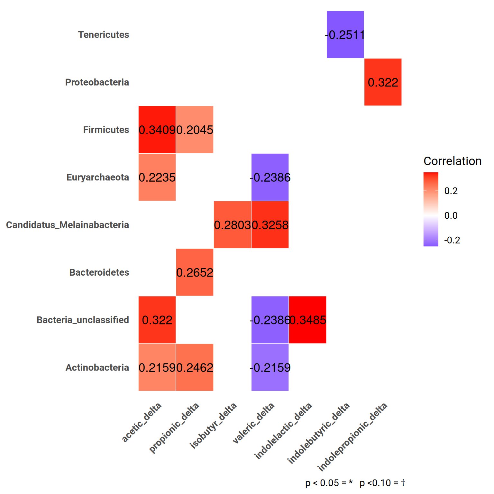
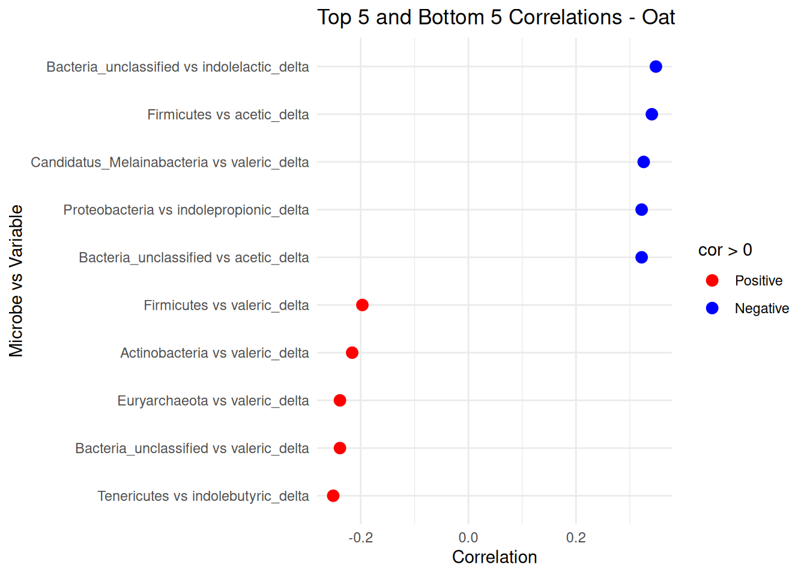
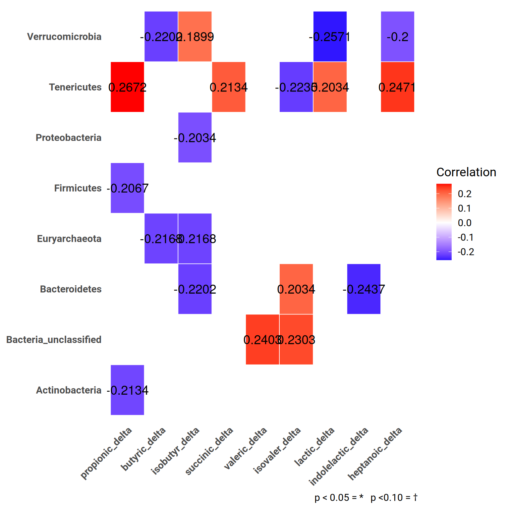
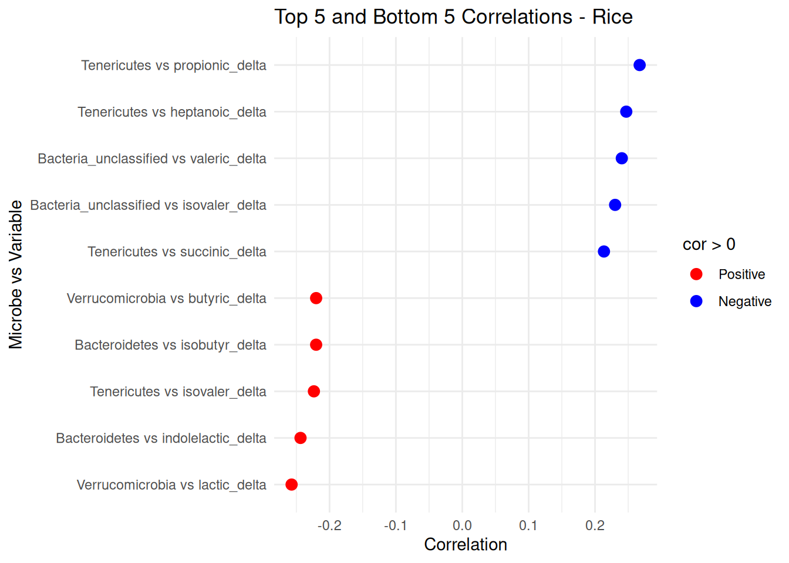
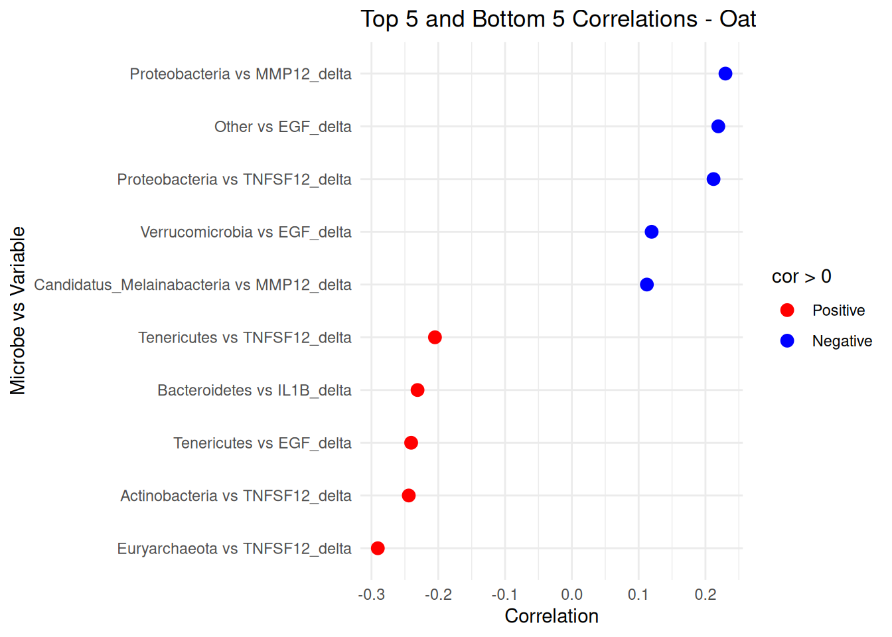
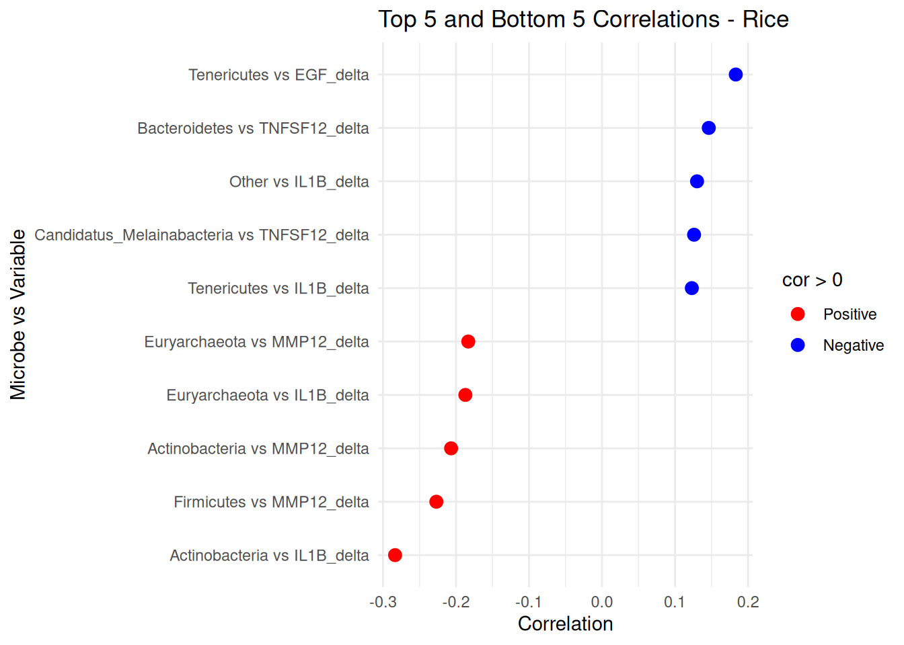
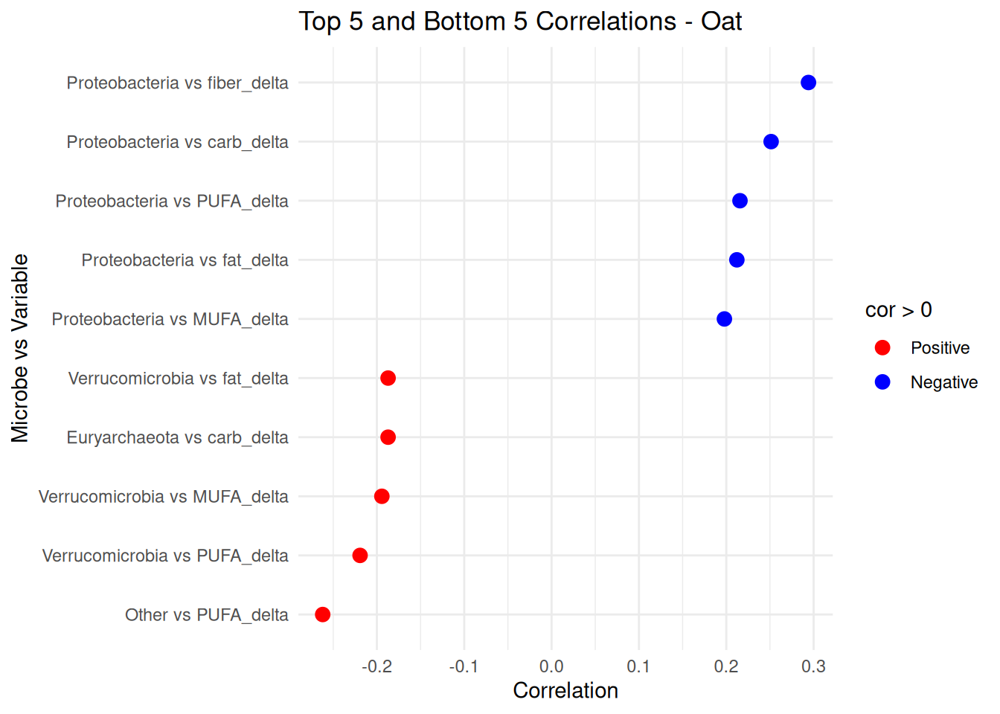
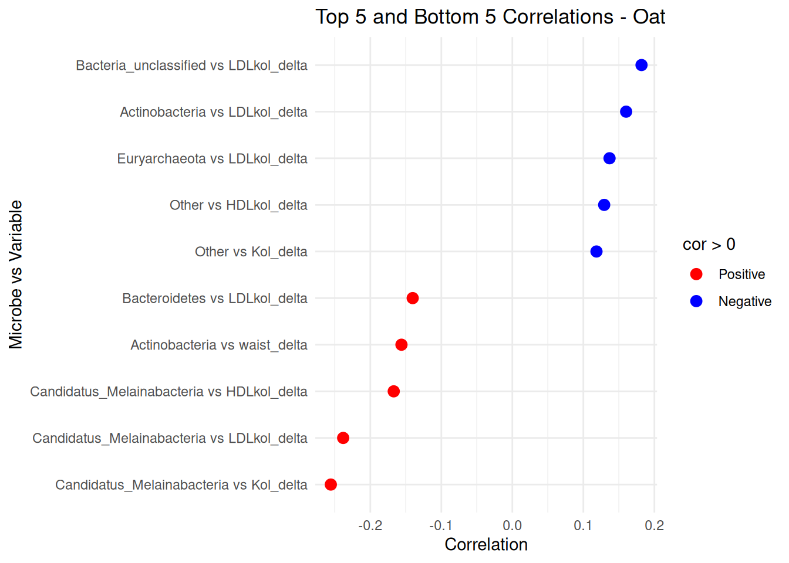
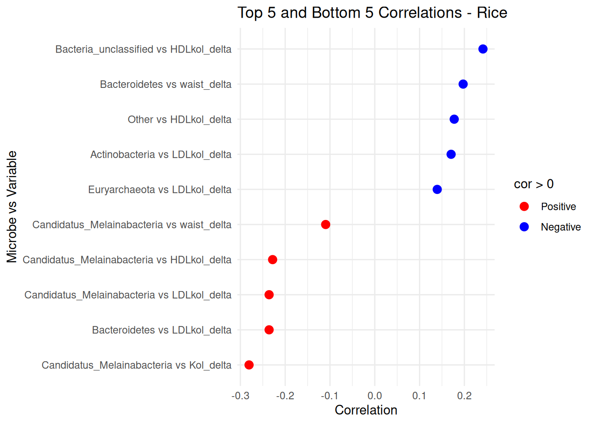

Correlation analysis
1 Taxonomic level: phylum_prevalent
Taxa that are less prevalent than this (in relabundance) have been agglomerated:
- Detection threshold: 0.1%
- Prevalence threshold: 10%
- Number of taxonomic groups: 10
- Transformation: clr
1.1 microbiota vs. Short-chain fatty acids (12 SCFAs in total)
1.1.1 Table Oat
Heatmap

Scatterplot

1.1.2 Table Rice
Heatmap

Scatterplot

1.2 microbiota vs. significant inflammation markers (IL-1B, MMP12, TNSF-12, EGF)
1.2.1 Table Oat
Heatmap

Scatterplot

1.2.2 Table Rice
Heatmap

Scatterplot

1.3 microbiota vs. dietary intake (total fat, carbohydrates, protein, fiber, SFA, MUFA, PUFA)
1.3.1 Table Oat
Heatmap

Scatterplot

1.3.2 Table Rice
Heatmap

Scatterplot

1.4 microbiota vs. biochem/antrop. (waist circumference, total cholesterol, LDL, HDL, Triglycerides)
1.4.1 Table Oat
Heatmap

Scatterplot

1.4.2 Table Rice
Heatmap

Scatterplot
